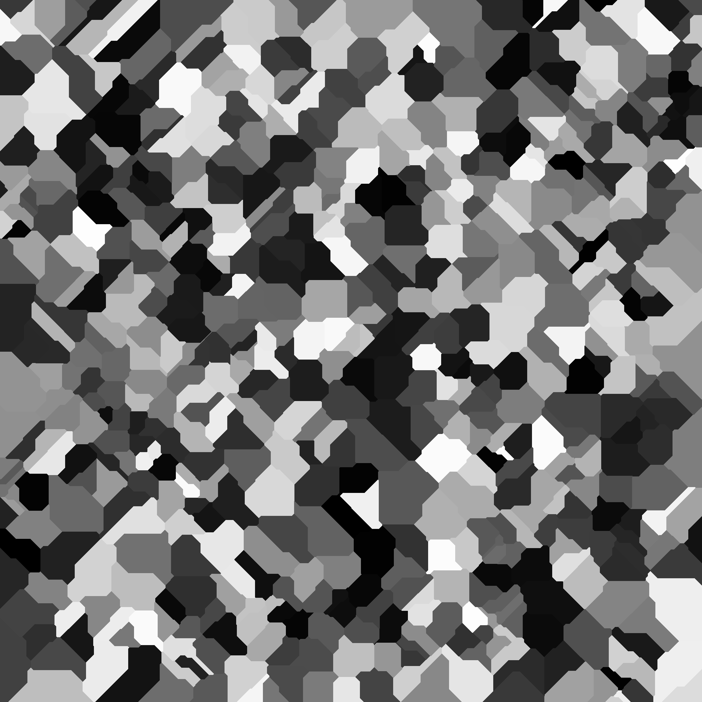

Performance¶
We interrupt our regularly scheduled program for some notes on performance, because if you've been trying to duplicate my code and algorithms (or actually USING my code and algorithms; contact me if you want the current source), you're probably getting slammed by it about now.
Unity's expectations¶
Although built on C# and .NET, Unity's docs don't generally make much mention of the standard multithreading/asynchronous models.
First, be aware that despite the absolute silence from the docs, async and await work just fine in Unity. If you're already familiar with them, they may be all you need. To this, Unity adds at least three different models for unblocking the all-important main thread: Coroutines, Jobs/Entity Component System, and Shaders.
Shaders are different in kind from the others: they move work from the CPU to the GPU, and are particularly useful for things where you're performing essentially the same calculation over many, many entities: computing colors by applying a function to every pixel every frame, computing waves by calculating distortion maps, moving entities by applying a function to ever vertex, etc. They're not a generic mechanism for doing "background" work; rather they solve certain common problems extremely efficiently. So we're not going to talk about them right now.
To begin with, Unity's main unit of computation is the frame. That's a little unusual if you come from a non-game development world, but it makes sense for games. Everything in MonoBehaviour is built around execution in a specific order, generally once per displayed frame. For most code that's in one of the Update() or similarly-named methods that get executed every frame (or at least on a cadence similar to frames, like FixedUpdate()).
Unity is also very, very main-thread focused. Almost none of it's API can be called anywhere except the main thread (at least not successfully).
All of this leads to a model where Unity expects work to be done in very small chunks, per frame, on a single thread. So nothing that goes in the MonoBehaviour implementations should take more than about 1/60 of a second at worst, and modern games are aiming for more than twice that frame rate.
With my "straightforward" implementations, generating a new terrain patch can take up to about a second, depending on size, and we're still just generating shape. Generating the initial world's Global Terrain Template can take minutes.
Both work, even when done in MonoBehaviour contexts. But I'm stretching the definition of "work" here -- the game basically freezes at startup until the GTT is complete, and freezes for a second or two every time a new terrain patch (or more than one) needs to be created. It's fine for this sort of initial research and experimentation, but it would be unacceptable as shipping code. And it's going to be unacceptable for us, pretty soon -- this is only going to get worse as we add functionality.
This is a good time to start working on performance, because if we're doing something wrong in a way that can't be moved to a more performant mechanism easily, we're just making more work for ourselves the longer we wait.
First things first¶
Does our code really need to take so long? I'm a big believer in straightforward, naïve algorithms for experimenting. Simple code means fewer bugs and more time to spend on the fun stuff.
As an example, my Voronoi diagram code (to assign each pixel a region) basically looks like this:
for each x position
for each z position
for each voronoi point
{
calculate the distance from (x,z) to that point
if it's the smallest we've seen so far, remember it as "smallest"
}
set the region for (x,z) to smallest
That works great, always gives the right answer, and is really simple to write; the actual code's only a little longer than the pseudocode here. But Vector2.Distance() is actually pretty expensive, and we're creating vectors constantly from both the test point at the Voronoi points in order to call it -- that allocation is moderately expensive, too.
Here's a different way to do it:
radius = 0
repeat until no pixels are assigned during a pass (or equivalently, all points are "finished")
{
for each voronoi point that's not "finished"
{
Find every pixel in a "ring" around the point at radius
if that pixel hasn't been assigned yet, assign it to this voronoi point
if all of them were already assigned, this voronoi point is "finished"
}
increase radius by 1
}
This never calls Distance() (or makes any vectors) at all. Each pixel is touched only once unless it's on an edge or corner. The "ring" calculation is complex and needs to not miss any pixels, so the actual implementation replaces it with an expanding square instead of a circle, which is much easier to calculate.
A circular expansion would produce the same basic map as the old algorithm. The simpler, expanding-square algorithm does not. It's not an actual Voronoi map. Convexity isn't maintained, and in fact, the regions are much more unevenly shaped.

But we're using this to make a rough map in the first place, and for this use, convexity isn't really much of a benefit and might even be a penalty. (This image compresses some 700+ different regions into 256 color levels, so not all of the region edges are visible.)
And while it may not be obvious from the pseudocode, the second algorithm is much, much faster than the first. For 400 Voronoi points on my system, it lowers the cost of the GTT from 2.5 minutes to 18 seconds. And the benefits get higher as you increase the number of Voronoi points: it takes the new algorithm about 25 seconds to do 900 points, but over ten minutes for the first one.
Huge gains like this aren't actually that uncommon in code like games where you're often iterating repeatedly over huge numbers of pixels. So it's worth a look to find out if there's an optimization somewhere that can bring your computational costs down. The profiler is a good place to look for this; it's a bit complex to use in Unity, but it's time well spent. You're going to need it, eventually.
Two kinds of Asynchronous¶
Even after our optimizations, though, we've still got several hundred or thousand times too much work to do in a frame, and it doesn't seem likely that any amount of algorithmic tweaking is going to bring us down into the right range. So we need to look at ways to keep our game performant while still getting that work done.
The two major tasks we've concentrated on thus far are fundamentally different from each other:
Global Terrain Template generation is done once at startup, and it needs to be completely finished before the rest of the game can do anything. Until there's a world that exists, there's nothing for the player to explore. So some amount of time needs to pass here. We can toss up a "Loading..." screen and just let GTT generation hang the game on the first frame until it's done, but it would be better to let the player do something else (customize their avatar, watch a cut scene, configure a network match, whatever) while it's happening, and just not let them go "in world" until we're ready. On subsequent runs loaded from a saved game, the GTT will presumably be loaded as part of the game data and not need to be regenerated at all.
A few Terrain Patches need to be present at startup, too -- at least the one the player is standing on. But mostly, these will be generated as the player moves around the world, in sets of three to five (or so, depending on generation radius) at a time. After the initial ones, Terrain Patches are generated while the player is still a full patch or more away from them. The player can only move so fast, so if these take a few hundred--or even a few thousand--frames to be generated, we're still good. These will be an ongoing cost as the player plays the game; they will likely still be generating new patches a hundred hours into the game.
So our goal in both places is to spread the computation out over many frames, without preventing the other things that are going on in our game from happening. And there are essentially two ways to do that:
- We could do a little bit of work each frame, and then give up ("yield") the rest of that frame's computational time to the rest of the game. In this model, everything would stay on the main thread, both our computation and the rest of the game's could use Unity APIs whenever they wanted, and the time taken would be determined by the total amount of computation and the single-threaded performance of the hardware. This is the model implemented by the simple async/await without Tasks, and by Unity's Coroutines.
- We could offload the work entirely to another thread or process, which on most modern systems means moving them to another real or virtual/hyperthreaded CPU core. This will be faster in absolute terms for both the expensive computation and the rest of the game -- they're effectively not competing for resources at all, and don't even need to interact until the expensive computation is done and the results are ready. Unity APIs would be mostly unavailable to the expensive computation, which often isn't as much of a penalty as it seems, since these are generally mathematical and data-structure oriented. This is the model implemented by async/await combined with Task.Run(), and by the Unity Jobs System. There's also a variant on this where you run essentially the same code simultaneously on many threads/cores with different inputs (say, generating 50 terrains at once) using ParallelForTask, but such routines are usually better suited to shaders on modern systems, and scale poorly between devices with varying numbers of cores.
Yield-based Methods¶
The most common of the yield-based methods is the Coroutine. To write one of these, you declare the routine to be of type IEnumerable (Coroutines can't return values), do whatever you're going to do, and break up the work with an occasional "yield return" statement of some sort. Each time the yield is encountered, the system will suspend the work, go do something else for a while, and resume on the next frame.
Aside from this "spreading" over time, the co-routine does just what it would do without the yields. Everything's executed in the same order, the results should be the same (unless they're dependent on time), and anything waiting for those results will still need to wait for them. It's always executing on the main thread, so there aren't any limitations in what Unity APIs you can call. Most importantly, the routine will still take the same amount of (clock) time to execute, or even a little more. You're not getting any true parallelism here--no background threads or multiple CPU cores are involved. The code just isn't blocking all the other stuff going on (in Unity, especially other game objects and the like).
A variant of the yield is yield wait, which effectively says "when you block me, don't bother giving me more time until this much time has passed." It's useful for expensive calculations that need to happen occasionally, but not on every frame.
And that's the ideal case for co-routines: things that are just running "beside" the regular stuff going on, and don't need to interact much with the rest of the system. If a co-routine calculates a value that other routines need, for example, you'll need to code the delivery mechanism of that value yourself (raise an event, call a function, or whatever when the coroutine is "done"). Things co-routines are good at: moving monsters around; turning on and off lighting and other effects as the players move around, tracking projectiles, etc. What they're bad at is: go do this expensive calculation, and give us the answer. The expensive calculation will take at least as long as just calling a normal function, and we have to figure out a mechanism for getting that answer from a routine that has no return type.
The C# language and .NET runtime provide the async and await keywords which do something similar in their basic forms: async functions can yield to suspend themselves for a while, and they can await the results of other async functions (await is "yield until I get the answer I want."). It works very similarly (Coroutines are implemented using async/await under the covers), but is somewhat more general and less Unity-specific. You can use either, or both.
I'm not giving examples here, because these are complex topics and there are much better examples and explanations on the Internet.
Thread-based Methods¶
If your intent is to actually parallelize work--that is, use multiple threads and cores to get the same amount of work done in a shorter clock time--you need a different mechanism. Again, you've got at least two to choose from.
The Unity Jobs system allows you to package work as an IJob, whose Execute() method contains the work to do. When executed, the job will do its computation on a background thread, possibly on another core (resources permitting).
The standard .NET runtime offers Task objects, which are fundamentally similar. Tasks are integrated with async/await so that you can use the same syntax, but await on a function that returns a Task is actually waiting for that Task's thread to complete. (You can also aggregate Tasks with a list of array, and then await "Any" or "All" of them completing.)
Again, the exact syntax is left for more specific sites on the Internet to provide. Also note that the Jobs system has some integration with the "Boost" compiler, and I'm not sure that's necessarily true of Tasks, if you want that extra functionality. That said, I'm not a big fan of libraries that replace something already built into the language with functionally identical replacements.
But there are some takeaways here: The first is: Jobs or Tasks are how you get more work done in the same time. They're actually happening in parallel, usually on different cores of the hardware itself. If you've got a lot of these running, they'll all complete in the time that would be taken by the single longest one if you were running them sequentially.
The second takeaway is the dev cost. Multithreaded programming is harder than single-threaded programming. The order of things becomes less predictable if the system is scheduling things for you. Two threads accessing the same variables can have all sorts of weird effects. It's easy to end up with circular dependencies that deadlock your application. Shared resources need to be carefully controlled to prevent multiple threads from modifying them in an unexpected order. The syntax (particularly in C# and .NET) is obtuse and finicky. And there's a always a little added cost for all the synchronization (although you usually get far more back from the parallelism.)
There are a number of standards and best practices for multithreading, but those only help for the code you write. Unless they specifically say so, you shouldn't expect any libraries you call--even standard system ones--to be thread-safe.
In particular, that goes for Unity's APIs. There are a small number of API points you can call from Jobs (they're listed on Unity's web site), but in generally assume you can't do anything that calls Unity-provided endpoints from a background thread. Even things you might expect to work, mathematical functions like Random.Range(), aren't thread safe.
So Jobs and Tasks are meant for computationally expensive stuff that can be written mostly using the base capabilities of the language, or with explicitly thread-safe APIs. For our purposes, that's actually not such a huge limitation, since we're generally just modifying large arrays of basic types using basic math. But if you do need math libraries, you'll likely want to use the .NET ones instead of Unity's, and for anything class based (like System.Random), you'll want to instantiate one class per thread, not share them between jobs (especially if you're using seeds to try and insure the same sequence of numbers. If multiple threads are pulling numbers from a single Random object, the order of numbers in each thread will not be deterministic even with seeding.)
A note of caution: If you're planning to use these true multiprocessing APIs, write your algorithms synchronously first: Unity in particular is very bad about reporting errors that occur in background threads, and you can't use Debug.Log() there. The most common sign that something has gone wrong is that await just never returns. Once you've got the routine working to your satisfaction, then move it to the background.
So what does that mean for Terrain Generation?¶
After a few days of performance tweaking, I've achieved some significant gains. In particular, the multi-second freeze that used to occur near patch edge traversal has been reduced to a sub-second hiccup. But it took a fair amount of work.
Achieving playable performance seems to be effectively impossible without using actual background threads, so that was the main focus of my efforts.
The single, most important takeaway: work with height maps as float[,] arrays and similar low-level structures, not Unity objects, as much as possible, and when not possible, try to do the "math" stuff and the "Unity Object" stuff separately.
In my case, that meant doing effectively all of the actual work of terrain generation directly on primitive arrays: I calculated all of the heights, stitching heights, texture values, etc. ahead of time on simple arrays, did them in async Tasks, and only actually transferred them to TerrainData objects after that background work completed. It still takes 8-12 seconds to make a terrain patch and stitch it to it's neighbors, but all of that gets done on a background thread while the player is still on a remote patch, and the actual copy (which has to be done on the main thread) takes a fraction of a second when we're done.
This has a second benefit: ECS and similar shader and shader-like technologies also don't work on most Unity objects, so we're ahead of the game moving to those technologies, too.
I also moved the Voronoi "shell" height generation into a background task, and the entirely-independent mountain range generation into another one. These can be executed in parallel, have no dependencies on each other, and are similarly complex, so they roughly cut the world generation time in half (to on the order of 15 seconds instead of half a minute). I used Tasks instead of Jobs for no particular reason. Since these make heavy use of random number generation, I built my own small random class that just implements the routines I need with the same names as Unity uses, but can be instantiated per-thread rather than based on a static.